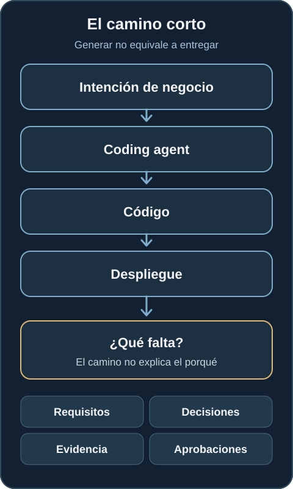
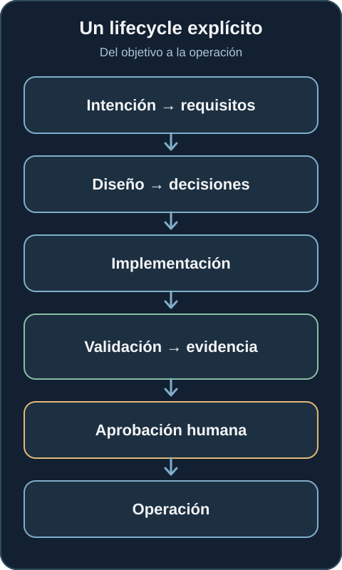
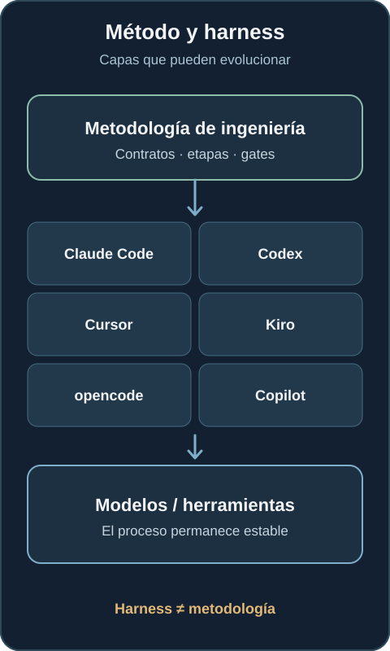
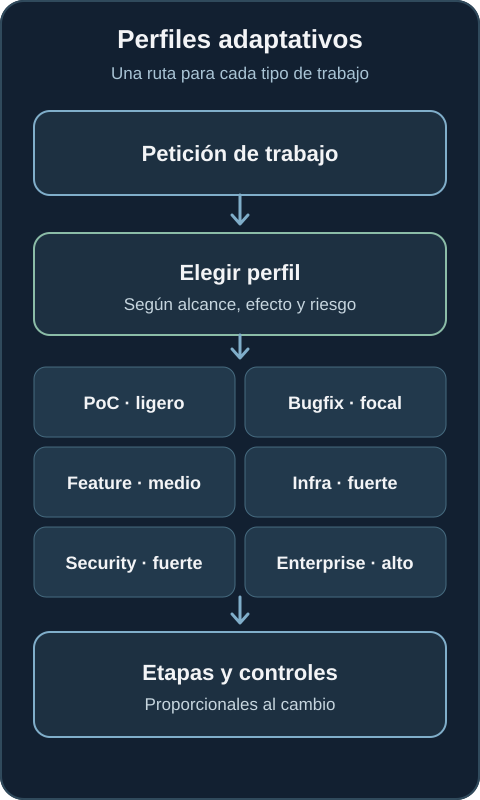
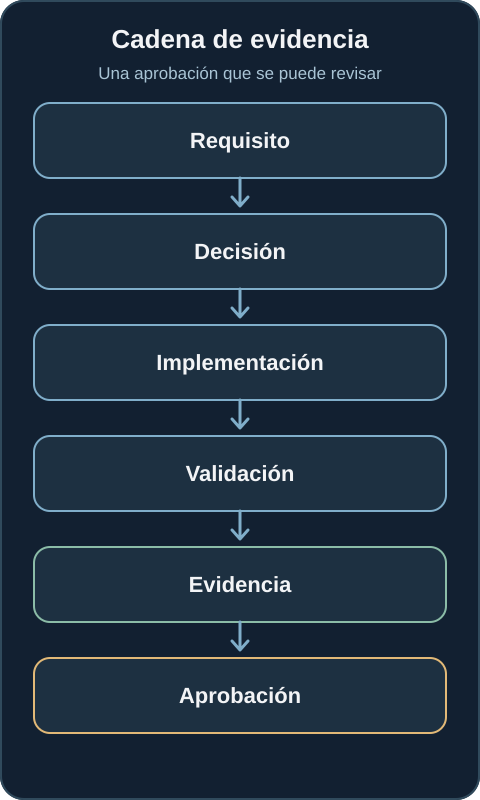
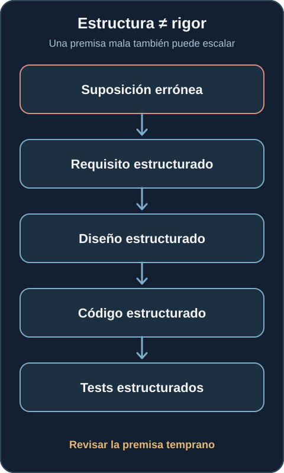
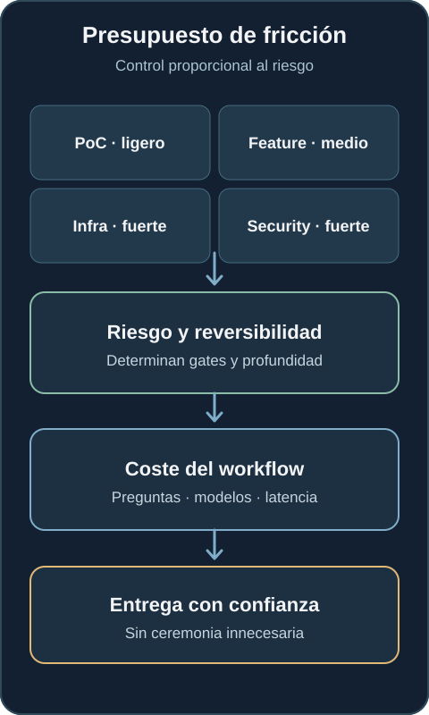
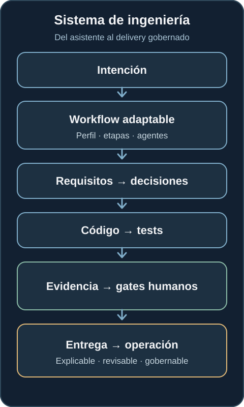

¿Qué pasa cuando tu agente de IA puede escribir código, pero no puede demostrar cómo llegó hasta él?
Un coding agent puede producir una solución convincente. El reto de ingeniería es conservar los requisitos, decisiones, pruebas y aprobaciones que permiten revisar su trabajo.
Los coding agents son cada vez mejores produciendo software. Podemos darles una petición abierta como «Construye un servicio de inventario con una API REST» y obtener requisitos, arquitectura, código, tests e incluso infraestructura. Resulta impresionante. Pero eso es solo una parte del problema de ingeniería.
¿Por qué se eligió un diseño? ¿Qué requisito satisface una funcionalidad? ¿Qué alternativas se descartaron? ¿Qué pruebas respaldan el resultado? ¿Quién aprobó las decisiones importantes? ¿Podríamos reconstruir el razonamiento tres semanas después?
Generar software y entregar software mediante un proceso gobernado son capacidades diferentes.

El problema no es generar código
El trabajo ad hoc con agentes suele seguir un camino corto: intención, prompt, agente, código. Puede funcionar bien para una tarea acotada. Cuando el trabajo crece, una conversación produce una decisión, la siguiente modifica otra, parte del contexto desaparece y las razones arquitectónicas quedan enterradas en el historial. Cambia un requisito, pero resulta difícil encontrar las decisiones que dependían de él. El código avanza mientras la trazabilidad se debilita.
Podemos terminar con software correcto y aun así no poder explicar el proceso de entrega. El vacío es todo lo que hay entre la intención original y el código: requisitos, decisiones, validación, evidencia y autoridad.
¿Y si el agente tuviera que participar en un lifecycle?
awslabs/aidlc-workflows es un ejemplo concreto interesante. Implementa AI-Driven Development Life Cycle (AI-DLC) como un workflow estructurado alrededor de agentes de desarrollo. La idea central no es otro generador de código. Es una metodología alrededor del agente: la intención avanza por requisitos, diseño, decisiones, implementación, validación, evidencia, aprobación y operación.
El modelo sigue importando, pero ya no es todo el sistema. El workflow pasa a formar parte del sistema de ingeniería. Sus etapas crean traspasos explícitos y puntos donde examinar lo producido.

El harness no debería ser dueño de la metodología
El proyecto separa la metodología del coding harness. Su documentación de integraciones describe Claude Code, Kiro, Codex, Cursor, opencode y GitHub Copilot. El mismo núcleo metodológico se adapta a distintos entornos de ejecución, aunque sus mecanismos de control difieren.
Si el proceso vive dentro de un único asistente, cambiar de asistente puede cambiar también el proceso. Separar las capas permite evolucionar herramientas y modelos mientras los contratos de ingeniería permanecen más estables. Eso tiene más consecuencias que decidir qué coding assistant gana esta semana.

El agente ya no ejecuta una única tarea
La documentación actual del lifecycle describe cinco fases y 33 etapas; la guía de ingeniería del harness describe 14 roles de agente. Esas cifras describen el framework disponible, no una obligación de ejecutar cada etapa en cada cambio.
Sus perfiles de workflow seleccionan caminos distintos para una feature, un bugfix, una prueba de concepto, un cambio de infraestructura o una corrección de seguridad. Un typo, un rediseño de autenticación y un cambio de infraestructura en producción no necesitan el mismo recorrido.
Gobernanza debería significar aplicar el control adecuado al riesgo que tenemos delante, no la máxima ceremonia a cada cambio.

Los human gates son límites deliberados
En puntos importantes el agente se detiene; una persona revisa, pregunta, corrige o aprueba; el workflow continúa. Esto añade fricción. Un agente totalmente autónomo puede generar código más rápido, pero el tiempo hasta generar código no equivale al tiempo de entrega con confianza, trazabilidad y capacidad de recuperación.
La guía de interacción del proyecto describe compuertas de aprobación después de las etapas que no son de inicialización. Es una decisión concreta de esa implementación. La pregunta general de ingeniería es dónde aporta valor real la autoridad humana según el riesgo del cambio. Una edición trivial no necesita la misma revisión que un límite de seguridad o una decisión de despliegue.
Una aprobación necesita evidencia
Pedirle a alguien que pulse Approve no basta. Quien revisa debería poder seguir una cadena: requisito → decisión → implementación → validación → evidencia → aprobación. La aprobación puede entonces referirse a qué se intentaba conseguir, cómo se abordó y qué respalda el resultado.
Los artefactos y el estado del workflow pueden hacer que esa cadena sea más duradera que un transcript de chat por sí solo. El transcript puede contener contexto útil, pero no debería ser el único lugar donde un equipo busque una decisión semanas después. El objetivo es un rastro de evidencia navegable, no un historial de conversación más largo.

Más estructura no garantiza mejores decisiones
Un workflow estructurado puede amplificar una mala premisa. Una suposición incorrecta puede convertirse en requisito formal y después en diseño, código, tests y un registro pulcramente aprobado. La cadena es trazable, pero puede seguir estando equivocada.
Ese es el riesgo de confundir ceremonia con rigor. Un workflow puede hacer explícitas y revisables las decisiones. No puede garantizar que la pregunta inicial, el contexto o el razonamiento fueran correctos. Siguen siendo necesarios modelos capaces, buenos criterios, comprobaciones independientes, pensamiento crítico y experiencia humana. La revisión debe cuestionar las suposiciones pronto, antes de que adquieran la aparente legitimidad de una cadena completa de artefactos.

La fricción necesita un presupuesto
Cada pregunta, aprobación, artefacto y llamada adicional al modelo consume tiempo, tokens y atención humana. Por eso un workflow gobernado necesita un friction budget: ¿cuánta revisión justifican el efecto y la reversibilidad del cambio?
Una prueba de concepto puede seguir un camino ligero. Una feature en producción puede necesitar evidencia más fuerte. Un cambio de infraestructura o seguridad puede requerir autoridad explícita y planes de recuperación. La clave es la proporcionalidad, no una clasificación universal de tipos de tarea: un cambio aparentemente pequeño también puede tener mucho riesgo en el contexto equivocado.

Existe además un coste del modelo. Analizar requisitos, razonar sobre arquitectura, descubrir riesgos y mantener coherencia entre etapas exige más que generar una función. La guía de modelos del proyecto recomienda actualmente un modelo de razonamiento capaz y nombra Claude Opus 4.8 como referencia. Es una recomendación de esta implementación, no un requisito del modelo operativo. Más razonamiento puede mejorar decisiones, pero también añade coste y latencia. Deberíamos evaluar la calidad de la evidencia y los resultados entregados junto con el coste de ejecutar el workflow.
La pregunta útil no es simplemente «¿funciona AI-DLC?». Es ¿para qué trabajos compensa este nivel de estructura? Los perfiles adaptativos importan porque permiten responderla para cada cambio.
Del coding assistant al engineering system
Esto conecta directamente con Platform Engineering. Los equipos de Plataforma llevan años haciendo consumibles el despliegue, la observabilidad, la infraestructura, los secretos, CI/CD y las políticas mediante interfaces repetibles. Con los agentes, metodología, contexto, decisiones, validación, evidencia y gobernanza también necesitan interfaces que otro actor pueda consumir con seguridad.
El consumidor ya no es solo una persona. Un agente puede realizar más trabajo, pero la organización sigue necesitando saber qué hizo, por qué, bajo qué reglas, con qué evidencia y quién conservó la autoridad sobre las decisiones importantes. Ese es también el hilo de mi artículo anterior sobre adopción gobernable de agentes.

AI-DLC Workflows es una implementación de una posible respuesta. No todas las organizaciones necesitan esta metodología exacta ni todas las tareas requieren su profundidad completa. La pregunta importante cuando aumenta la autonomía de los agentes es: ¿qué sistema de ingeniería construimos a su alrededor para que su trabajo siga siendo explicable, revisable y gobernable?